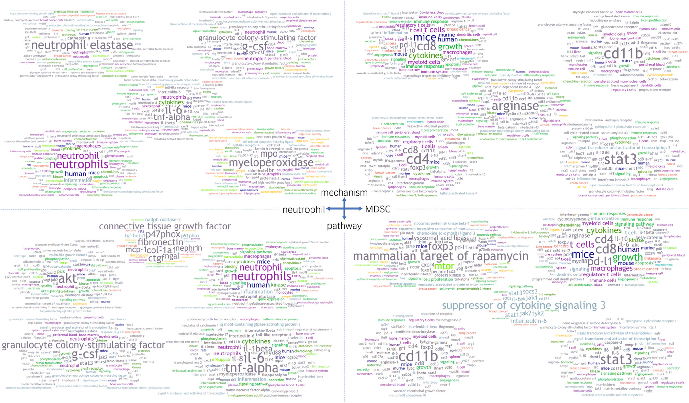

BioTextQuest is a tool to help you discover novel concepts in biomedical literature.
It accepts a PubMed queries and by using the extract tagger it creates meaningful clusters. The most important terms of each cluster are presented in a tag cloud format and enriched by exterior services.
You start your analysis by selecting the Start tab
Antuamwine, BB, Bosnjakovic, R, Hofmann-Vega, F, et al. N1 versus N2 and PMN-MDSC: A critical appraisal of current concepts on tumor-associated neutrophils and new directions for human oncology. Immunol Rev. 2022; 00: 1- 30. doi:10.1111/imr.13176
Copyright [2023] [copyright holder]
Licensed under the BSD 3-Clause License.
See https://opensource.org/license/bsd-3-clause/ for more information.
From the following dropdown menu you can select your theme: